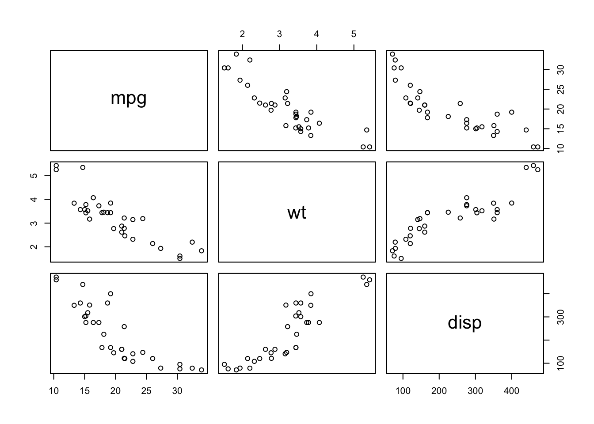

41 Lab 11: Multivariate Regression
Department of Political Science
Washington University in St. Louis
(date here)
41.1 Class Goals
Multivariate regression
3D representation of data
Interaction terms
41.2 Multivariate Regressions
What if we’re interested in modeling the relationship between two independent variables and a dependent variable? Linear regression can do that through use of matrices and the OLS equation. Fortunately, we have R to solve all the matrix algebra for us.
Multivariate Regression can be used to examine the joint relationship between any number of independent variables and a dependent variable. It is important to remember that all of the variables involved have to be continuous or dichotomous. However, also know that linear regression is quite robust to assumption violations. Thus, we can still get workable results if we violate this.
Could we use a 5-point scale measuring ideology as our dependentvariable?
Could we use a 5-point scale measuring ideology as an independent variable?
Generally, we can use this prediction equation:
\[\hat{y_i} = \beta_0 + \beta_1 x_{i1} + \beta_2 x_{i2} + \ldots + \beta_k x_{ik}\]
Linear model in R:
lm(formula = y ~ x.1 + x.2 + ... + x.k, data = my.data)We can then apply it to the dataset “mtcars”:
\[MPG = \beta_0 + \beta_1 weight + \beta_2 displacement\]
Linear model in R:
data("mtcars")
fit <- lm(mpg ~ wt + disp, data = mtcars)/QPM/bookdown-minimal-master/bookdown-minimal-master/_bookdown_files/Lab_Files/34.png)
41.3 3D Representation of the Data
pairs(mtcars[,c("mpg", "wt", "disp")])
/QPM/bookdown-minimal-master/bookdown-minimal-master/_bookdown_files/Lab_Files/35.png)
library(scatterplot3d)
attach(mtcars)
s3d <-scatterplot3d(wt,disp,mpg, pch=16, highlight.3d=TRUE,type="h", main="3D Scatterplot")
fit <- lm(mpg ~ wt+disp)/QPM/bookdown-minimal-master/bookdown-minimal-master/_bookdown_files/Lab_Files/36.png)
attach(mtcars)
s3d <-scatterplot3d(wt,disp,mpg, pch=16, highlight.3d=TRUE,type="h", main="3D Scatterplot")
fit <- lm(mpg ~ wt+disp)s3d$plane3d(fit, col = ’black’)/QPM/bookdown-minimal-master/bookdown-minimal-master/_bookdown_files/Lab_Files/37.png)
41.4 Interactions
Prediction equation:
\[\hat{y} = \beta_0 + \beta_1 x_{1} + \beta_2 x_{2} + \beta_3 x_{1} \times x_{2}\]
Linear Model in R:
lm(formula = y ~ x.1 + x.2 + x.1 : x.2, data = my.data)Or simply
lm(formula = y ~ x.1 * x.2, data = my.data)With interactions, we are essentially asking how does a change in \(x_1\) affect \(y\)?
\[\frac{dy}{dx_1} = \beta_1 + \beta_3 x_2\]
Holding \(x_2\) constant, a one-unit increase in \(x_1\) increases \(y\) by \(\beta_1 + \beta_3 x_2\).